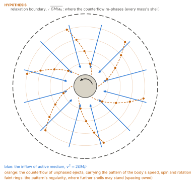
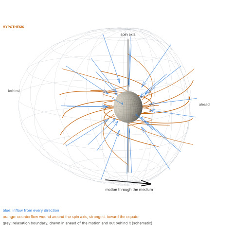
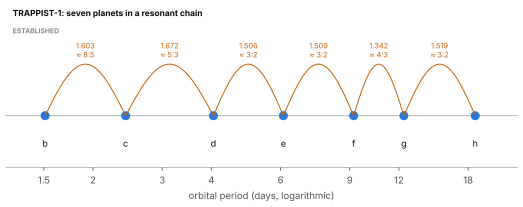

Library › The Unified Framework for the Graviton Pressure Theory
The Properties of Gravitational Fields
Inflow, Counterflow, and the Shells That Rhythm Builds
About This Paper
This paper says what a gravitational field is, and what it does. A field is the medium in motion around a mass: an inflow of active medium, and a counterflow of the medium the mass ejects out of phase. The counterflow carries the pattern of the body’s speed, spin and rotation, and the regularity of that pattern makes shells. The paper follows the field from a single mass to systems of many bodies, and through the long times over which systems sort themselves into the regular structures astronomers observe. It views the field in three dimensions, sets out what touches what when two fields meet, and traces each property of the field to a property of the graviton. It sets out what is measured, what GPT proposes, and what is still to be derived.
The graviton and the rule that phase decides push are in Part 15; the equations of the medium are in Part 23; the model as a whole is in Part 14.123 Claims are marked by their status, as the key shows.
Introduction
A body’s speed, its spin and its rotation have effects beyond it. A spinning Earth turns the gyroscopes that orbit it; Saturn’s oscillations raise waves in its rings; moons lock their turning to their orbits. These effects happen because the body is not in an empty nothing. It is in something, and that something carries what the body does.
Physics has met this question before and set it aside. Newton used his law of gravity while writing, in 1693, that one body acting on another at a distance through a vacuum, with nothing to carry the action, was “so great an absurdity” that no competent thinker could accept it. General Relativity gives spacetime itself the properties that carry gravity, and so, as Einstein said in 1920, makes space without an ether unthinkable; but it does not say what that ether is. A description that matches the measurements is a record of what happens. It is not what makes it happen.
GPT names the carrier. The gravitational field is the medium in motion around a mass. [Hypothesis] Every measurement stands, and every claim here must pass it. What GPT adds is the mechanism: what moves, what it carries, and why the field has the properties observed.
What a Field Is
Fed, not emitted.
The first edition said that fields are not emitted but sculpted by intake, and that is kept. A field is not something a mass sends out, as a lamp sends light. It is the motion of the medium the mass sets up by taking it in. It lasts as long as the intake does, because the medium passing through is continually replaced, as a river’s shape lasts while its water changes.
A field changes at the speed of the medium’s waves.
When a mass moves, its field does not update everywhere at once. The change travels outward through the medium. Gravitational waves are those changes, and they travel at \(c\): [Argued] the waves of a neutron-star merger in 2017 arrived with its light, after 130 million years, within two seconds.4
Two Flows: Inflow and Counterflow
The first edition described this as gravitons that “fail to phase-lock” with the core being “rejected, vented, or redirected”. That is the counterflow. What changes in this edition is its account: the rejected medium is not lost, and it does not press; it leaves out of phase, and it carries the body’s pattern outward (Section “Pattern and Regularity: Shells”).
Integration at the core.
The first edition also held that some of the inflow phase-locks and joins the core, so that mass is built from the medium. If matter is organised medium, accretion of this kind is how matter forms, and a body may retain a small part of what passes through it. [Hypothesis] The size is bounded. With the medium’s density at about \(10^{-26}\) kilograms per cubic metre, the medium passing into the Earth at its surface is about \(4\pi R^2 \rho_g v\), close to two kilograms a year. Whatever part of that the Earth keeps is far below anything that could be weighed. What fraction is kept, and how matter first forms from the medium, are owed (Part 17). [Open]
Lateral shedding.
A rotating body sheds its counterflow with the rotation in it. The first edition’s “lateral” redirection, inflow turned to tangential motion, is this: the ejecta leave a turning surface, and carry the turning outward (Section “Rotation’s Reach”).

Pattern and Regularity: Shells
These traits need a medium.
In Newton’s gravity the field outside a uniform sphere is the same whether it spins or not, and moves with it unchanged. A body’s spin and speed reach nothing beyond it; only an uneven shape lets a rotation act on what is outside. In GPT the medium carries them [Argued], and some of that reach is measured: the spinning Earth drags orbiting gyroscopes (Section “Rotation’s Reach”).
How a shell acts: phase filtering.
The first edition described shells as phase filters: what arrives in step passes or is admitted, what arrives out of step is routed. This is phase decides push (Part 15) at the scale of a field. A body whose own rhythm is in step with a shell’s pattern is pressed in the same sense, turn after turn; one out of step is pressed now one way and now the other, and the effects cancel. [Hypothesis] That is how a shell can act strongly over long times while acting weakly at any instant.
Small at an instant, decisive over time.
At any instant, a shell’s push on a body is small. [Argued] Satellites orbit at every altitude, from 160 kilometres to beyond the geostationary ring, and the choice among them is engineering: period, coverage, drag. The Earth’s gravity is mapped smoothly by satellites and by ranging to the Moon, and planetary ranging finds no extra acceleration anywhere near \(10^{-9}\) metres per second squared. What shells do is sort: slowly, through the rhythms of the bodies in them, [Argued] into the regular structures of Section “Systems Built over Time”.
Shells as a record.
The first edition called shells memory echoes of the core: records of its accretion, its rotation and its changes. A system’s present structure is the record of its history: of where bodies migrated, which rhythms they were caught by, and how long they have been held. [Hypothesis] This is the counterpart, for systems, of the activation record of Part 13: a pattern set at one time and carried forward.
The Relaxation Boundary
For the Sun this is about 7,000 astronomical units, far beyond the planets and inside the Oort cloud. For the visible mass of the Milky Way it is about 8 to 11 kiloparsecs, near the Sun’s own distance from the centre. Beyond the boundary, gravity changes its form [Argued]: it falls more slowly than Newton’s law, and the orbital speeds of stars and gas in galaxies stay level instead of falling. Across 153 galaxies, the acceleration observed tracks the acceleration expected from visible matter alone along one curve, with the change at \(a_0\).5
The first edition explained flat rotation curves as “nested shell coherence”. That survives in this form: the relaxation boundary is the shell every mass has, and the galaxy’s outer orbits lie beyond it. The law that governs gravity beyond the boundary, from which the observed curve must follow, is owed (Part 23). [Open] The boundary around the Sun can already be tested: pairs of stars thousands of astronomical units apart orbit slowly enough to probe it, and the analyses so far disagree.67
Rotation’s Reach
A rotating mass turns gyroscopes around it. [Argued] Gravity Probe B carried four gyroscopes in a polar orbit around the Earth and measured their turning by the Earth’s rotation at \(37.2 \pm 7.2\) milliarcseconds a year, against 39.2 predicted; the LAGEOS satellites’ orbits are turned as predicted, to about ten per cent.89 The measured effect has a definite shape. A gyroscope is turned at \[\boldsymbol{\Omega} = \frac{G}{c^2 r^3}\left[\,3(\mathbf{J}\cdot\hat{\mathbf{r}})\,\hat{\mathbf{r}} - \mathbf{J}\,\right],\] where \(\mathbf{J}\) is the body’s angular momentum: one way over the poles and the other way over the equator, falling as \(1/r^3\). General Relativity gives this formula; it is the target GPT’s mechanism must reach.
The parts must be taken together. A counterflow on its own, each parcel keeping its angular momentum, would give a swirl falling as \(1/r\), which turns gyroscopes in the wrong pattern; the inflow and re-phasing return and relax part of that turning. A medium that passes rotation from layer to layer gives the \(1/r^2\) pattern by itself: it is what a sphere turning in a viscous liquid produces, and what a sphere twisting an elastic solid produces. The measurement fixes the combination, not which part carries most. The derivation of the combined swirl from the four parts, and its strength \(2G/c^2\), are owed. [Open]
What the Earth’s spin allows.
A medium that drags on a spinning body takes angular momentum from it, so a viscous medium would slow the Earth. The day is lengthening, by about 1.8 milliseconds a century. Tidal braking by the Moon and Sun would lengthen it by about 2.3; the crust’s slow rebound since the ice ages shortens it by about half a millisecond; together they account for what is seen.10 Whatever spin the medium takes from the Earth is small enough to hide in that balance. [Argued] A medium that holds its twist, as a solid does, takes none at all once the twist is set up; a medium that relaxes its twist, through re-phasing, takes a little. The Earth’s spin history bounds which.
An imprint beyond shape.
The standard account explains why rings and moons lock to a body’s spin through the body’s uneven shape. GPT expects a rotational imprint beyond what the shape accounts for, because the medium carries the spin itself. [Hypothesis] That is a test (Part 29).
The Field in Three Dimensions
A flat drawing shows one slice of the field. The field itself is three-dimensional, and the three dimensions are where much of its behaviour comes from (Figure 2).

The equatorial plane is where structure is observed. [Argued] Saturn’s rings lie in its equatorial plane; the large moons of the giant planets orbit close to their planets’ equators; the planets orbit within about seven degrees of the Sun’s equator. The standard account explains the flattening by the angular momentum of the collapsing cloud each system formed from, and that stands. GPT adds that the medium’s own turning, carried by the counterflow, is strongest in that same plane, so the pattern that sorts bodies is most regular where the bodies are. [Hypothesis]
A test from the wake.
If the boundary is drawn in ahead of a moving body and out behind it, then wide pairs of stars near the Sun’s boundary should behave differently according to their direction from the Sun relative to its motion through the galaxy. [Hypothesis] The analyses of wide binaries so far, which disagree with each other, do not sort the pairs by direction (Section “The Relaxation Boundary”). That is a test (Part 29).
What touches what when two fields meet.
A body in the field of another is not in an abstract influence. It is in four things, each with a carrier:
the other’s inflow, which carries it, as its own inflow carries the other; their pressures combine (Section “Many Bodies”);
the difference in that inflow across it, which stretches it: the tides (Part 13);
the other’s swirl, which turns its spin axis and its orbit, as the Earth’s turns orbiting gyroscopes (Section “Rotation’s Reach”); and
the other’s counterflow, which passes through it carrying the other’s rhythm, while its own counterflow passes back.
An orbiting body also lays its own pattern along its orbit as it goes. Two bodies whose orbital periods are in a ratio of small whole numbers meet again and again at the same places: Io overtakes Europa always at the same points of their orbits. At those places their patterns meet in step, turn after turn, which is where the medium’s pressing adds up instead of cancelling. [Hypothesis] That is the mechanism of Section “Systems Built over Time”, seen in three dimensions.
From the Graviton to the Field
Every property of the field so far follows from a property of the graviton, or of the medium the gravitons make (Part 15). Table 1 sets them side by side.
| The graviton, or the medium | What it gives the field |
|---|---|
| Moves and carries momentum | The inflow delivers momentum to every body it carries; the field’s changes travel through the medium at \(c\); a moving body’s field has a wave and a wake. |
| Oscillates, and has a phase | The counterflow, ejected out of phase, does not press; it carries the body’s timing outward as a pattern. |
| In phase, pushes | The medium’s pressure, which carries bodies; shells press bodies whose rhythms are in step with them, turn after turn. |
| Conserved | What flows in flows out again: the counterflow; the count of gravitons rises toward a mass as \(r^{-3/2}\). |
| Acts on what is organised | Bodies are patterns with rhythms of their own, which is what lets them lock to shells; the delivery tracks a body’s energy. |
| Fine-grained | At an instant the field is smooth, and an orbit is possible at any radius; the pattern is regular, not noisy. |
| Stiff across the flow (the medium) | The medium passes a body’s turning from layer to layer; it carries transverse waves, light and gravitational waves. |
| Re-phases (the medium) | The counterflow is brought back into step at the relaxation boundary, the shell every mass has. |
No one of these produces the field alone. The field is all of them acting at once, in three dimensions, around bodies that turn and move. [Hypothesis] That is why the field’s properties are linked: why a body’s turning, its motion and the structure of its system are one subject, not unrelated facts. [Argued]
Many Bodies
Combining by pressure gives Newton’s dynamics for many bodies exactly [Argued]: the orbits of the planets, the tides (Part 13), and the Lagrange points. The first edition described the Lagrange points as harmonic nodes where overlapping shells reach equilibrium. In the rotating frame of two bodies, they are the five points where the two accelerations and the turning of the frame balance; the medium supplies the accelerations, and the points follow.11 Where the counterflows of the bodies meet, their rhythms can lock, which is how the shells of systems form (Section “Systems Built over Time”). The full rule for combining flows in strong fields, and the direction of the medium’s motion around many bodies, are owed (Part 23). [Open]
Systems Built over Time
The first edition held that fields interlock: they interpenetrate, modulate one another and entrain the motion within them; that moons lock into orbital chains and planets into harmonic spacing; that motion reinforces the structure it moves in. This is what astronomers observe, once time is allowed for. [Argued]
Gaps cleared at resonances. The Kirkwood gaps in the asteroid belt lie where an asteroid would circle the Sun three times for each orbit of Jupiter, five times for every two, or twice for each one. The inner edge of the Cassini Division in Saturn’s rings lies where a ring particle would circle twice for each orbit of the moon Mimas. The Encke and Keeler gaps each contain the small moon that keeps them open, Pan and Daphnis.
Chains captured and held. Io, Europa and Ganymede circle Jupiter in the ratio 1:2:4. The seven planets of TRAPPIST-1 form an unbroken resonant chain (Figure 3); the four planets of Kepler-223 circle in the ratio 3:4:6:8.1213 Such chains are formed as planets migrate through the disc they formed in and are caught one by one.
Regular spacing. Neighbouring planets in compact systems tend to be similar in size and evenly spaced in the ratios of their periods.14
Spins locked to orbits. The Moon keeps one face to the Earth; Mercury turns three times for every two orbits; Pluto and Charon each keep one face to the other. The Moon in turn steadies the tilt of the Earth’s axis, which without it would wander widely.15
A body’s own rhythm written around it. Saturn’s internal oscillations drive waves in its C ring, so that the rings record the planet’s interior.16 The rings of the dwarf planets Haumea and Quaoar lie at resonances with their spins.1718

In GPT, these are the shells of systems. Each body’s counterflow carries its rhythm; where rhythms are in step, the medium presses in the same sense, turn after turn, and over long times the bodies are caught and held. Motion reinforces the structure it moves in, as the first edition said: a body held in a resonance adds its own rhythm to it. [Hypothesis] The standard account calculates these same structures from the bodies’ combined accelerations, tidal friction and migration; GPT supplies what carries the forcing from one body to another, and why rhythm, not just distance, decides where bodies settle. [Argued]
Motion in the Field
The first edition spoke of motion as granted by the field: bodies held in resonance by the shell they occupy, and inertia as resonance retention. The instinct is right in one respect: a body’s motion is a relation with the medium, not a property it has in isolation. [Hypothesis] A moving body takes in the medium faster at its leading face than at its trailing face; that imbalance is its momentum, and it costs nothing to keep (Part 23, Section 23.9). Motion continues because of the body’s relation to the medium, not in spite of it. [Argued]
It continues without permission or payment. [Argued] Spacecraft coast between the planets for decades; the Voyager probes, launched in 1977, are still travelling outward. Satellites orbit at every altitude, and an orbit decays smoothly, at a rate set by atmospheric drag that rises and falls with the Sun’s activity. The first edition’s quantised orbits, its “snapback” at shell boundaries and its stepwise decay are withdrawn as instant effects. What survives is the slow version: capture into resonance over long times (Section “Systems Built over Time”).
Light in the Field
Light crossing a field is bent because the medium flows, not because space is curved. [Argued] Light moves at \(c\) through the medium, and the medium near a mass acts on it as a medium with a refractive index, \(n \approx 1 + 2GM/c^2 r\), that rises smoothly toward the mass (Part 23). The first edition’s account, refraction rather than geometry, is kept. Its layers of different index are not: the bending of radio waves by the Sun follows the smooth law to about one part in \(10^4\), and the delay of signals passing the Sun to about one part in \(10^5\),19 so any layering of the index is far smaller than that.
Anomalies
The first edition took deep-space anomalies as shell crossings. The Pioneer anomaly is resolved [Argued]: a small constant acceleration of the Pioneer 10 and 11 spacecraft toward the Sun, about \(9\times10^{-10}\) metres per second squared, is accounted for by heat radiated unevenly from the spacecraft, modelled from their design and flight data.20 The flyby anomaly, small unexplained changes in the speed of some spacecraft swinging past the Earth, remains unexplained, [Open]21 and several later flybys showed none within their errors. It is not evidence for shells, but it is not yet explained.
What Remains to Be Derived
The swirl of a rotating mass from all four of its parts, and its strength. [Open]
The counterflow’s speed, and so the spacing of shells within the relaxation boundary. [Open]
The law of gravity beyond the relaxation boundary, from which the observed galaxy curve must follow. [Open]
The relation between a mass and its intake, on which the universality of \(a_0\) depends. [Open]
The full rule for combining flows in strong fields. [Open]
How much of the inflow a body retains, and how matter forms from the medium. [Open]
The shape of a moving body’s field: how far its boundary is drawn in ahead and out behind. [Open]
Each is a question about a named interface: what moves, what it carries, and what it meets.
Conclusion
A gravitational field is the medium in motion around a mass: an inflow of active medium, which carries bodies, and a counterflow of medium ejected out of phase, which carries the pattern of the body’s speed, spin and rotation. The regularity of that pattern makes shells. Every mass has one, the relaxation boundary, where gravity changes form; systems of bodies build more where their rhythms meet and lock, slowly, over long times. At any instant the field is smooth enough that an orbit is possible at any radius; over the life of a system it sorts bodies into chains, gaps and locks.
In three dimensions the field is wound around each body’s spin axis, strongest toward its equator, and carried along with its motion, so that it has a wave ahead and a wake behind. Every property of it traces back to the graviton and the medium the gravitons make, and the properties are linked because they are one structure.
None of this would happen in an empty nothing. A body’s traits have effects because the medium carries them.
Changes in the Second Edition
This list records what changed from the first edition and why. Changes to the argument alter what the paper claims or how it supports a claim; clarifications improve wording, sources or presentation and leave the argument as it was.
Changes to the argument
The field is stated as the medium’s inflow, \(v^2 = 2GM/r\), with its pressure and acceleration (Part 23). “Fed, not emitted” is kept.
The first edition’s rejected and redirected gravitons are the counterflow of neutral ejecta (Part 15). It carries the pattern of the body’s speed, spin and rotation; the pattern’s regularity makes shells.
Shells are restated. Every mass has one, the relaxation boundary; further shells may stand within it; systems build theirs where rhythms lock over time. At any instant a shell’s push is small. Quantised orbits, impedance membranes that forbid altitudes, “snapback” and stepwise decay are withdrawn as instant effects, because satellites orbit at every altitude and decay is tracked continuously; their slow form, capture into resonance, is kept.
Phase filtering at shells is restated as phase decides push at the scale of a field: rhythms in step are pressed in the same sense turn after turn.
Rotation curves from nested shell coherence are restated through the relaxation boundary, the shell every mass has.
Rotation’s reach is given its measured form (Gravity Probe B, LAGEOS) and a mechanism built from all four parts of the field: counterflow, the medium’s coupling, inflow and re-phasing. The combined derivation is owed. The Earth’s spin history bounds the medium’s drag.
Orbital chains, harmonic spacing and entrainment are kept, with the observations (resonant gaps, the Laplace resonance, TRAPPIST-1, Kepler-223, regular spacing, spin locks, ring waves driven by Saturn’s oscillations, the rings of Haumea and Quaoar). GPT supplies the carrier of the forcing; the standard dynamics are not replaced. A rotational imprint beyond shape is proposed as a test.
“Inertia as resonance retention” and “no universal tendency to continue motion” are withdrawn: bodies coast. What is kept is that motion is a relation with the medium (Part 23).
New: the field in three dimensions. The inflow arrives from every direction; the counterflow is wound around the spin axis and strongest toward the equator, where structure is observed; a moving body’s field has a wave and a wake, so its relaxation boundary lies closer ahead than behind, which gives a test with wide binary stars sorted by direction. What touches what when two fields meet is set out, and a table traces each property of the field to a property of the graviton or the medium.
Lensing is by a smooth refractive index; layers of different index are withdrawn, being bounded by the measured bending and delay.
The Pioneer anomaly is resolved as uneven heat radiation; the flyby anomaly is marked open.
“Inflow precedes mass” is kept as a hypothesis on the origin of matter, with the size of retention bounded.
The “micro-vacancies” of the closing passage are replaced by ejection out of phase (Part 15).
Clarifications
The subtitle changes from Layered Structure, Directional Flow, and Coherent Memory to Inflow, Counterflow, and the Shells That Rhythm Builds.
“Graviton exchange is the carrier of inter-field intelligence”, and descriptions of fields as “living”, are left to Part 2; the physics papers make no claims about intent. “Memory” is kept in its physical sense: structure that records history.
Three figures, a table, status marks and this list are added.